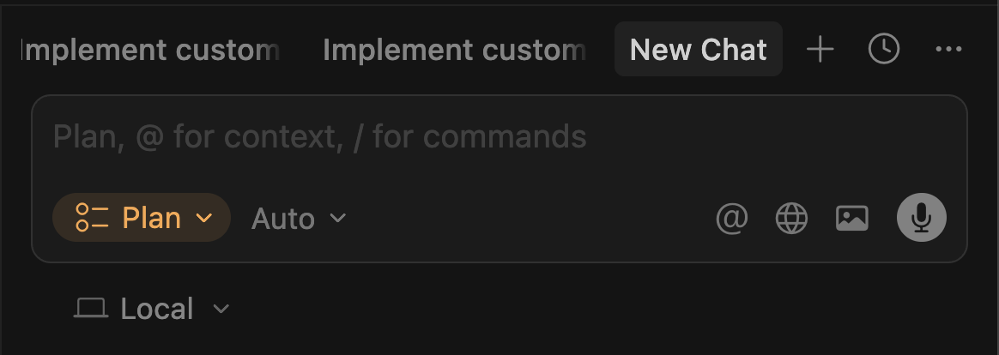
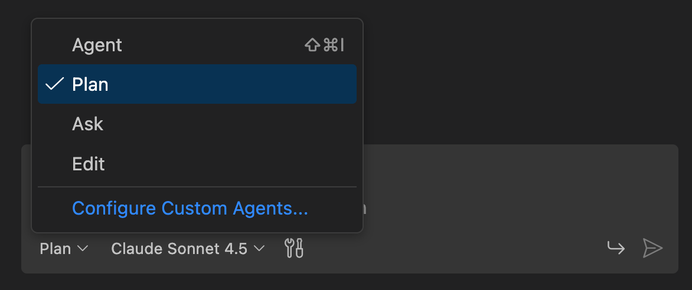
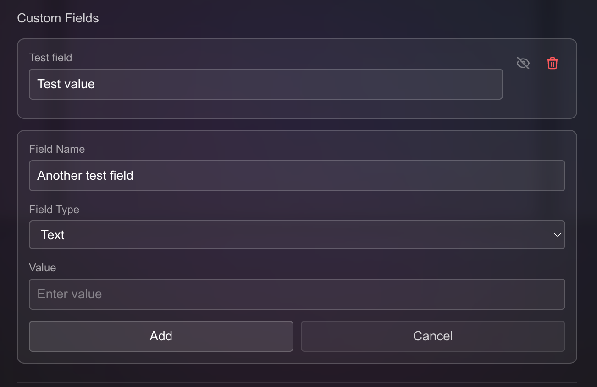
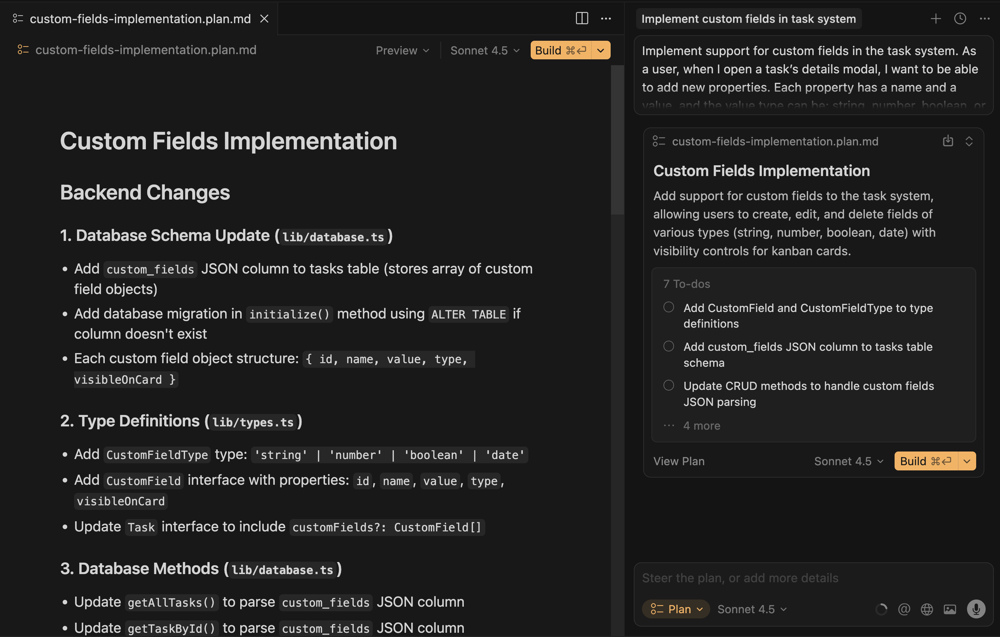
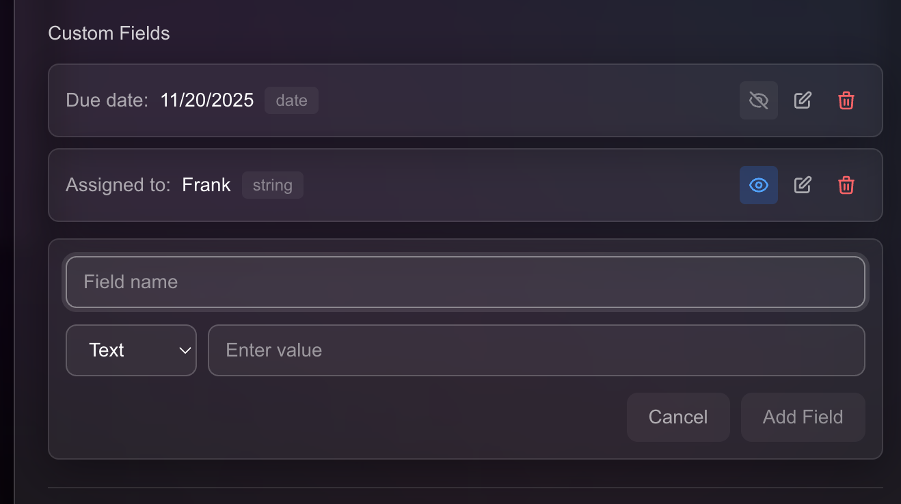
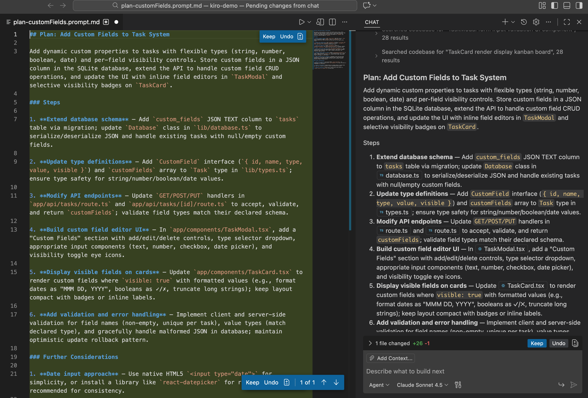
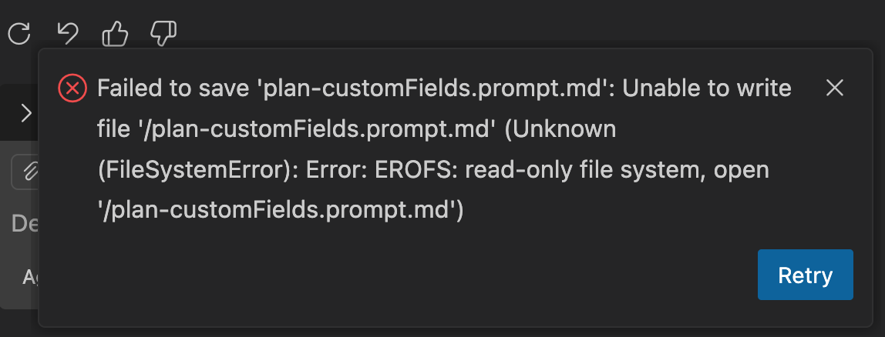
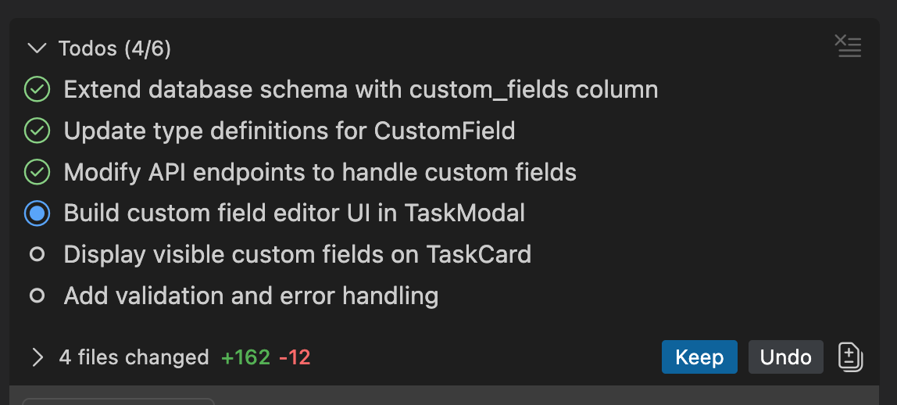

Cursor vs. Copilot: What tool has the best planning mode? Cursorvs.Copilot:Whattoolhasthebestplanningmode?Cursorvs.Copilot:Whattoolhasthebestplanningmode?
Alfonso Graziano
2nd of December, 2025
Share
We dive deep into what plan mode really means, how it works in Cursor vs. Copilot, compare workflows, show you what we did in a real test, and draw practical take-aways.
AI-coding assistants have moved fast. Not long ago, they were little more than autocomplete tools helping you finish for-loops or boilerplate. But now we’re entering a new phase: agents able to understand your entire codebase, asks clarifying questions, run tools, reason, plan the work and execute complex tasks.
With the rise of “Agent mode”, which we discussed in this article on our blog, we’re seeing a clear shift from AI being an interesting, yet limited tool, to becoming a powerful assistant during our daily work.
Unfortunately, the vibe-coding approach (“just prompt and code” or “let the AI figure it out”) has its limits. When you’re building production-grade systems with real complexities (dependencies, edge cases, long‐tail behavior and integrations), you need a different workflow. That’s where plan mode can support us!
In this article we’ll dive deep into what plan mode really means, how it works in Cursor vs. Copilot, compare workflows, show you what we did in a real test, and draw practical take-aways.
What is Plan Mode?
In essence, plan mode is a workflow layer before the actual implementation begins. Instead of jumping straight into coding (“here’s what I want: build X”), the AI takes a step back: it analyses the codebase/context, and drafts a plan/blueprint (usually in markdown, with tasks, to-dos and all the high-level changes to apply), then you review, edit and approve the plan. Only then the AI will start the implementation.
Using plan mode allows longer agent sessions or more complex tasks because the plan gives structure, context and boundaries rather than ad-hoc prompting. From a team/architecture perspective, plan mode aligns better with spec-driven development or “design first” mindset rather than purely reactive coding.
Some IDEs / Agents that support plan mode as per today are: Copilot, Cursor, Claude Code, Cline, Continue, Replit and many more! In today’s article, we will focus on the user experience and results of Copilot vs Cursor, since they are two of the most used tools.
Preparing the agents
Before we get into how the Cursor and Copilot Plan modes performed, it’s worth knowing how to try them for yourself. Both tools are relatively easy to get started with, but their setup paths differ slightly.
Setting up Cursor
Cursor is a dedicated integrated development environment (IDE), a fork of Visual Studio Code (VS Code) with AI features, including agent mode built in from the ground up.
Use the AI sidebar, switch to plan mode and you are ready to go

You can read more about Cursor’s Plan mode in the documentation.
Setting up Copilot
To get started:
Download and install VS Code
Ensure Copilot is enabled on your Github account
Open the Copilot sidebar in the editor and select “Plan”

You can read more about Copilot’s Plan mode in the documentation.
Setting the stage
For our comparison to be meaningful, we chose a task which involves changes on the frontend, backend and has to follow the design guidelines of our application.
Specifically, we’re working with a demo repository, a Next.js‑based Kanban‑style task board. The assignment given to both tools is:
Implement support for **custom fields** in the task system. As a user, when I open a task’s details modal, I want to be able to add new properties. Each property has a **name** and a **value**, and the value type can be: **string**, **number**, **boolean**, or **date** (with a datepicker UI). I should be able to create any number of custom fields and edit or delete them later. These fields must be stored persistently in the backend using a dynamic or flexible schema (e.g., JSON field).
In the kanban board, each task card should allow me to **toggle the visibility** of specific custom fields. Next to each field in the task modal, show a small “eye” icon that controls whether that field appears directly on the card. When visible, the card should display the field name and formatted value (e.g., dates formatted nicely, booleans as checkmarks). The UI should remain clean and compact.
markdown
To ensure fairness and consistency, both tools, running in their respective environments, were configured to use the Claude Sonnet 4.5 model.
With this setup, we can compare two workflows: going straight into implementation vs. doing the planning phase first, both with Cursor and Copilot. Then we’ll observe how each tool behaves, how long it takes, how much rework happens, and what kind of output we get.
Straight to code: vibe-coding with Cursor
Before diving into planning workflows, we wanted to try the simplest approach first: skip the planning, skip the back-and-forth and just ask the agent to build the feature directly.
Using Cursor, we prompted it with the full requirement as described above, without using Plan Mode or any intermediate planning steps.
Cursor went straight to work: it started generating the implementation across both frontend and backend. It created new input components for the task modal, added logic for storing custom fields in a flexible JSON structure, and even introduced some UI toggles for visibility. All in one go.

Was it perfect? No. But was it usable? Surprisingly, yes.
For a task of this scope (relatively well-contained, involving standard React patterns and a modest API/backend update) Cursor delivered something quite decent. It took a few minutes to run through its changes, and the result was an almost working feature. Some rough edges remained, but most of the logic was there. The generated code can be found on this branch.
⚠️ One Bug Worth Noting
While testing, we found a consistent issue across all three implementations: the straight-to-code version in Cursor, the plan-mode version in Cursor, and the plan-mode version in Copilot:
After clicking the Save button, the custom fields were not properly persisted to the backend.
This suggests the bug is likely rooted in a subtle schema or state update issue, which all three approaches failed to reason about fully. It’s a good reminder that even smart agents still require post-review and validation: they might pass the 80% mark, but edge cases and integration bugs can easily slip through.
We won't consider this particular bug as a differentiator between the tools since it occurred in every case. Still, it's worth highlighting to show the limits of even the best agents today when it comes to real-world reliability.
Cursor in Plan mode
In Cursor, when you click “Plan”, the tool doesn’t immediately dive into implementation. Instead, it enters a planning phase where it generates a .plan.md file, in this case, custom_fields.plan.md. This file is automatically opened in the editor’s preview pane, making it easy to read, tweak, and approve before taking the next step.
The plan file lays out a detailed blueprint of what Cursor intends to build. Here’s a snapshot of what was generated:
# Custom Fields Implementation## Backend Changes### 1. Database Schema Update (`lib/database.ts`)- Add `custom_fields` JSON column to tasks table (stores array of custom field objects)
- Add database migration in `initialize()` method using `ALTER TABLE` if column doesn't exist
- Each custom field object structure: `{ id, name, value, type, visibleOnCard }`### 2. Type Definitions (`lib/types.ts`)- Add `CustomFieldType` type: `'string' | 'number' | 'boolean' | 'date'`- Add `CustomField` interface with properties: `id`, `name`, `value`, `type`, `visibleOnCard`- Update `Task` interface to include `customFields?: CustomField[]`### 3. Database Methods (`lib/database.ts`)- Update `getAllTasks()` to parse `custom_fields` JSON column
- Update `getTaskById()` to parse `custom_fields` JSON column
- Update `createTask()` to handle empty `customFields` array
- Update `updateTask()` to serialize `customFields` to JSON
### 4. API Routes (`app/api/tasks/[id]/route.ts`)- Update PUT endpoint to accept and validate custom fields in request body
- Add validation for field types and values
## Frontend Changes### 5. Custom Fields Manager Component (`app/components/CustomFieldsManager.tsx`)- Create new component for managing custom fields in task modal
- Include:
- List of existing custom fields with edit/delete actions
- Form to add new field (name input, type selector, value input based on type)
- Eye icon toggle button for each field to control `visibleOnCard`- Date picker UI for date type fields
- Checkbox UI for boolean type fields
- Number input for number type fields
### 6. Task Modal Updates (`app/components/TaskModal.tsx`)- Import and integrate `CustomFieldsManager` component
- Add custom fields state management
- Pass custom fields to save handler
- Display custom fields section below priority field
### 7. Task Card Updates (`app/components/TaskCard.tsx`)- Filter and display only visible custom fields (`visibleOnCard: true`)
- Format field values based on type:
- Dates: Use `toLocaleDateString()`- Booleans: Show checkmark icon (✓/✗)
- Numbers: Format with proper localization
- Strings: Display as-is, truncate if too long
- Style custom fields section to remain compact and clean
## Key Implementation Details- Custom fields stored as JSON array in SQLite: `custom_fields TEXT DEFAULT '[]'`- Each field gets unique ID (UUID) for reliable editing/deletion
- Visibility toggle is per-field, stored as `visibleOnCard` boolean
- Date values stored as ISO 8601 strings for consistency
- Boolean values stored as actual booleans in JSON
- Clean, compact UI maintaining existing design system
markdown
Once the plan is finalized and approved, a single click on the “Build” button shifts Cursor into Agent Mode and the coding begins. The system starts to implement the plan file step by step.

Unlike more formal spec-driven approaches, this plan isn’t committed to the repo by default, it exists as a transient implementation scaffold. However, for this experiment, we manually saved the file into a dedicated /plan folder to preserve the planning logic as part of the artifact.
Overall, Cursor used 53.9k tokens out of its 200k context window (about 26.9%) for the plan + build cycle.

The resulting UI felt polished and well-integrated: the custom fields component blended nicely with the existing modal design. From a UX perspective, the feature looked and behaved like a native part of the app during field creation and editing. Please note that differently from the basic implementation, this version presents a “Edit” button, which has not been developed in the vibe-coding approach.
To preserve authenticity and provide a realistic sense of what was generated, we’ve left the agent’s work untouched: no manual tweaks, no post-run cleanup. You can view the full output as committed by Cursor here.
Copilot
Copilot’s plan mode differs significantly from Cursor’s. When you initiate plan mode in Copilot, the plan doesn’t appear as a Markdown file in the file tree. Instead, it’s displayed directly in the sidebar interface with a clean visual layout and two utility buttons: “Create File” and “Build”. This is a nice touch: in theory, it gives you flexibility to either review the plan, save it as a file, or jump straight into implementation.

However, in practice, the experience was a bit clunkier.
When we clicked “Create File” and hit Save, Copilot attempted to save the plan as a new .plan.md file but threw an error:

After this failed attempt, the “Build” button simply disappeared, leaving no direct way to initiate the implementation phase. To continue, we had to manually prompt the agent:
“Please proceed with the implementation.”
Only then did Copilot resume its work and begin coding.
Here’s the full plan Copilot produced:
## Plan: Add Custom Fields to Task SystemAdd dynamic custom properties to tasks with flexible types (string, number, boolean, date) and per-field visibility controls. Store custom fields in a JSON column in the SQLite database, extend the API to handle custom field CRUD operations, and update the UI with inline field editors in `TaskModal` and selective visibility badges on `TaskCard`.
### Steps1.**Extend database schema** — Add `custom_fields` JSON TEXT column to `tasks` table via migration; update `Database` class in `lib/database.ts` to serialize/deserialize JSON and handle existing tasks with null/empty custom fields.
2.**Update type definitions** — Add `CustomField` interface (`{ id, name, type, value, visible }`) and `customFields` array to `Task` type in `lib/types.ts`; ensure type safety for string/number/boolean/date values.
3.**Modify API endpoints** — Update `GET/POST/PUT` handlers in `app/api/tasks/route.ts` and `app/api/tasks/[id]/route.ts` to accept, validate, and return `customFields`; validate field types match their declared schema.
4.**Build custom field editor UI** — In `app/components/TaskModal.tsx`, add a "Custom Fields" section with add/edit/delete controls, type selector dropdown, appropriate input components (text, number, checkbox, date picker), and visibility toggle eye icons.
5.**Display visible fields on cards** — Update `app/components/TaskCard.tsx` to render custom fields where `visible: true` with formatted values (e.g., format dates as "MMM DD, YYYY", booleans as ✓/✗, truncate long strings); keep layout compact with badges or inline labels.
6.**Add validation and error handling** — Implement client and server-side validation for field names (non-empty, unique per task), value types (match declared type), and gracefully handle malformed JSON in database; maintain optimistic update rollback pattern.
### Further Considerations1.**Date input approach** — Use native HTML5 `<input type="date">` for simplicity, or install a library like `react-datepicker` for richer UI? Native is recommended for consistency.
2.**Custom field limits** — Should there be a maximum number of custom fields per task (e.g., 10-20) to prevent UI clutter and maintain performance?
3.**Default visibility** — Should newly created custom fields default to `visible: false` or `visible: true` on task cards?
markdown
Visually, the resulting implementation was quite similar to Cursor’s. It produced a clean UI, added a new custom fields section to the modal, and showed per-field visibility toggles on the task cards. The custom field rendering was compact and consistent with the design.
One nice touch worth highlighting: both Cursor and Copilot track progress through "agent todos": checkboxes in the plan file that indicate which steps have been completed. This creates a natural task list feel, which helps you stay oriented during long or multi-step operations.

Verdict: Plan mode matters
Across the board, both plan-mode implementations outperformed the straight-to-code, vibe-coding approach and the difference was clear.
While the direct implementation from Cursor gave us a usable baseline, using Plan Mode resulted in better-structured logic, cleaner components, and more thoughtful handling of edge cases on both the frontend and backend. Also, in this case we used a model optimized for coding, but especially if we don’t use State of The Art models, the difference between using and not using Plan mode is more evident.
Between the two plan modes, Cursor edged ahead thanks to its cleaner planning structure and smoother experience during implementation. The .plan.md file it generates is not only more readable but easier to tweak and follow.
If I had to pick one tool for day-to-day use with Plan Mode enabled, I’d go with Cursor. The experience feels more deliberate, more stable, and better tuned for real work, but if you’re working with Copilot already, you’ll definitely have great results as well!
Final thoughts
Both Cursor and Copilot are no longer just autocomplete tools. They’re evolving into legitimate collaborators: ones that can help reason through a complex feature, break it down, and then implement it with speed and surprising accuracy.
We’ve reached a turning point where planning before coding is becoming a native part of the AI-assisted workflow.
Of course, oversight still matters. Bugs can still appear, context can be misunderstood, and critical pieces still need your judgment. But the value is undeniable: even a solo dev can ship faster, think more clearly, and write more consistent code with the right agent at their side.
The future of software development isn’t just assisted: it’s collaborative.